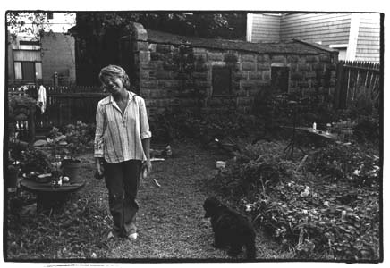

{kind=link}
Mike Mazur really never comes to my house. I took this picture the third or fourth time, at most, that he was here. Mostly, I see him at his house, or more likely, talk to him if he answers the phone when I call Gail, or if he gets on an extension and asks us when we're getting off.
{kind=link}
Every spring I plead with Mike to paint my forsythia bush in the backyard. I watch it every day when I work at the kitchen table doing indexes. I love the way it slowly turns to yellow, starting a few days before the crocuses make their way through the mud. So far, I haven't been able to figure out how to catch its minute nuances of more yellow on black and white film. Mike used to laugh at me. It's his nature, he'd say, to be blind to my forsythia [because I keep on pointing it out to him) and to be drawn to my trash barrels leaning against the exhausted iron fence. But lately, he's been saying, 'Next spring, maybe, Ellie.'
In 1966, after I'd been using the camera for a year, I took rolls and
rolls of pictures of Mike and his model in his studio. Mike used some of
them -- in the sense that any artist uses photographs -- in his series,
'Artist and Model,' a print of which is over the couch in several pictures.
But I didn't get any psychic energy out of their usefulness to him. It
goes to show that you can't predict which episodes will fall flat, leave
you where you are, and which ones will make you soar. (And emphasizes my
good luck in knowing Ginsberg, Creeley, Olson, and Blackburn at a tentative
and critical time.)
In October 1972 I got the idea to hawk my photographs from a supermarket shopping cart at Holyoke Center in Harvard Square from Columbus Day to Christmas. Ed Lang, Ilene Lang, Mike Mazur, and some of my students were aghast. 'You're making your work too available. People won't take care of it if they don't have to pay a lot of money for it. You should wait to be in a gallery,' they advised me. But I wanted to see what people liked, what they didn't like. I wanted to see what would happen. It was one of those times Harvey and I had broken up and I was in the mood for some excitement. I figured.if I did it for fun, people would sense that.
And of course, it made that whole year. I printed things that until then existed only on contact prints. I got a sense of cohesion in all my separate images. I got a sense of audience. I was a photographer; I wasn't just creating material for an elaborate filing system. People who had never heard of me or my work came over to the wagon to see what was going on. I made money. I made friends.
That first year, the police had a vendetta against all the street vendors. They chased us down the block and threatened to arrest us. But Harvey called the Chief of Police and the City Solicitor and told them that photographs were protected by the First Amendment. Their case against me would never hold in court. After that, I was free and clear. Christmas 1973, I made seven hundred dollars.
{kind=link}
There was an exquisite rainbow over Flagg Street during the moment of this photograph. Andy Wylie. Christina Wylie. Lee Harwood. Me. We all rushed to the front porch.
Becoming affiliated with Mather House was one of the smartest things I did when I moved to Flagg Street. It was just being built and I thought, I live right next door to that place, it would be fun to get involved. So I got in touch with Skiddy van Stade, the Master, who checked me out and made me an unaffiliated tutor. That means I give a noncredit photography seminar, run the darkroom with a student, and eat dinner there almost every night when I'm not dieting.
I've made good friends there -- John Limon, Brian Williams, Charlie Olchowski, Harry Rand -- and like the way the energy flows. There are times when being available to students exhausts me, but like Creeley says to me, you can't blame them for trying to get every ounce, that's their job. Sometimes, too, knowing people who are in their early twenties, on the edge of their lives, makes me cranky because I can't think of anything wise or reassuring to say -- except hang in there; cast lots of nets.
{kind=link}
Brian Williams came to Harvard from Tacoma, Washington. He is the only person I've ever met from that state. His junior year, he and I took pictures of everyone in Mather for a wall mural and Brian's work was much better than mine. Proud of him but a little jealous, I remembered the Talmud admonishment not to envy your student or your child. Christmas 1973, Brian got a supermarket cart and hawked his photographs with me. This picture was taken in his sophomore year when he came over to borrow my camera body. It was his first visit to my house and we took pictures of each other.
{kind=link}
When Mather House was just getting started, Skiddy van Stade said to me, 'One of the people you can count on to help you is a sophomore, Charlie Olchowski.' He was right. Charlie was the person who did most of the physical work of building the darkroom, making sinks, painting woodwork, walls, floors. By the time he was a senior (1973) Mather House had the best darkroom and photography display program of the thirteen Harvard houses.
When Charlie graduated, he took a year (before going to law school) to devote to his own photography -- studies of rock musicians and of birds nesting, feeding, staring out at you. One of the times he dropped in from Greenfield, where he lives on the other side of Massachusetts, I took the picture of him here.
I called him, in early July, hysterical about making perfect prints for this book and doing indexes to earn money at the same time. Miraculously, he had the time to print for me and has made many of the photographs that this book was printed from.
{kind=link}
Bobbi Carrey did an amazing thing: she got me on my diet. She is the only person I know who understands the madness of being a food junkie. Her pictures here are before and after she lost fifty pounds. She got me to go to Weight Watcher meetings at the Hotel Commander near the Cambridge Common every week. Not only to weigh in but to stay for the necessary lecture afterward. She would tell me how hard it had been for her, tell me how she had to put ketchup on peanut M&M's to keep from eating them -- and give me ideas on how to feel less deprived. When I feel myself weakening, I call her and she gives me a pep talk. She is sympathetic but firm; 'Look, I know every excuse in the book; I've used them all. Losing weight is the most important job you have now.'
{kind=link}
{kind=link}
Bobbie is also my only woman friend who is a photographer and so there is sometimes an underlying tension about how the work is going. Mark says this happens to him, too, with his friends who are writers.

{kind=link}
Jay Hutchinson, a sculptor and painter, used to live at 23 Flagg Street. When Christina Wylie moved to New York, she was able to get the Wylie half of the house. Now we share the driveway and the backyard. We occasionally have wine or coffee in one or the other kitchen, but generally our lives don't spill into each other's. Jay put in the grass, the vegetables, and most of the flowerbeds. I've planted perennials, day lilies I dug out of the ground in Cherry Valley with Peter Orlovsky, a mimosa now twenty-two inches high, and five bleeding hearts.
Nobody can get to me like my mother can. And I'm sure she'd say the same for me. We have an unerring instinct for what will make the other livid. And depending upon the weather, we each have more or less self-control. When I get off the phone from talking to her, I shake my head. How can she still rile me? By sixty-three, shouldn't she start to become a meek old lady?
One of the shocks of my adult life is realizing how much I'm like her. My hysterical Jewish woman energy comes from her. My curiosity for people. My sociability. My expectations and ambitions. I have her crazy ear for language, a certain rhythm and love of repetition of words. An intonation.
She likes to say that she's never been depressed, ever, in her whole life. Not her. She loves to shop and compare prices everywhere. It can be anything. Coffee. Sheets. Turkeys. Suitcases. Plastic cups. Not only does she shop for herself, my father, Janie and her family, Sandy, me; she looks for things for a string of cousins and friends. When anyone needs anything, they tell Elaine, in case she comes across it in her travels. Recently, she told me she had just bought twelve pink and blue gingham bathrobes, for $5.95 each. Twelve? That was just too much. 'You know how I adore gingham, Elsa,' she told me, 'and everyone can use another robe.'
She has certain axioms that will probably reverberate in my unconscious after I'm a 'meek old lady' myself: Put your snow tires on your car by November 11 (her birthday]. Never wear black shoes after May 30. Never wear white shoes after Labor Day. Never go to anyone's house without bringing something, Never put a carton of milk on the table; use a pitcher. Even though my father retired as fruit buyer for Stop & Shop in 1973, my mother still calls and tells me to come right out to Newton for lettuce, sweet corn and cucumbers and carrots. She has a whole crate of Granny Smith apples a friend dropped by, they cost thirty-five cents apiece at the store; I could save a fortune. Before she and my father went to Florida in January 1974, my mother went through her closet to pick out all the winter clothes she wouldn't be wearing that would fit me. Then she emptied her refrigerator and came to Cambridge with her fruits and vegetables and double-knit slacks.
My father had been a professional football player with the Buffalo Bisons for six months in 1929; he played center. But it was the Depression and he had to come home to support his mother. In 1951 he was voted into the Boston University athletic Hall of Fame, although he was very modest, didn't campaign for the honor, or do anything to promote himself. I was always aware that he had been a star and grew up sure he was one of the most important men in Boston. I thought he knew everybody. Anything I wanted, he could get wholesale, if not free. He seemed to know everything. Absolutely anything I mentioned, he could tell me all about. He isn't really all that tall, but he seemed huge to me, a giant. I loved to crawl all over him. When a car got stuck, it seemed to me he just got under it and picked it up. Incredibly stubborn to this day, if not more now than ever, one of the family myths he has had to live with is that when he was six, his mother sent him for bagels. He didn't want to go. 'I'll go,' he said, 'but I'll throw them down the sewer.'
He comes from a flamboyant family -- the Kotzens. I'm named for his grandmother, Ada Kotzen [we have the same Hebrew name], who came to this country from Russia in 1903, and had nine children, my father's mother, Anna, being the oldest. They were all raucous, intensely Jewish (though not at all scholarly), athletic, ready to do anything. The men worked in the fruit market, right on the street. Sadie Kotzen learned how to swim in the twenties, unheard of for a woman. Gertrude Kotzen, the youngest, was the family intellectual. Everyone was in awe of her, if not a little put out. I can remember my aunts and uncles saying, 'Gertie believes in psychiatry.' Eight of the original siblings lived into their seventies; three are still going strong. Only Ida died early, at forty. I like to flatter myself that I'm 'one of those Kotzens.'
{kind=link}
My superficial easiness probably comes fram having grown up in an apartment house where I felt at home in almost all twelve families and from having been sent to buy bagels on Sunday morning when I was four. I asked strangers to cross me and got used to finding what I needed out in the world.
Paul Blackburn
Gary Snyder
Harvey Silverglate
Allen Ginsberg
Ed Sanders
Gregory Corso
Peter Orlovsky
Gail Mazur
Mark Mirsky
Joanne Kyger
Lawrence Ferlinghetti
Robert Creeley
Harry Rand
Charles Olson
Robert Duncan
Robert Bly
Ken Irby
Anne Waldman
Alan Lelchuk
John Limon
Seymour Simches
Bobbie Louise Hawkens
Hannah Green
Tom Pickard
Andrea Dworkin
Victor Bockris
Michael Mazur
Lee Harwood
Find Elsa's Books


Please change your links and bookmarks to elsadorfman.com!
Elsa thanks her cybergodmother, photo.net, her longtime, most generous host at furfly.com, and her current web host Mike Sisk at TCP/IP Ranch, LLC.
Copyright 1970-2010 © Elsa Dorfman.
Inquiries for the use of Elsa's content are welcomed!
Please
read these guidelines.
Contact
Elsa Dorfman via email or send Website Feedback to her webmaster.